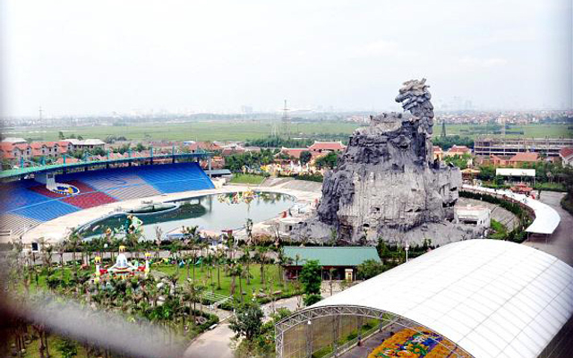
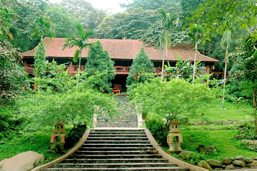
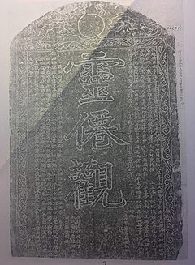

4 địa điểm du lịch tại Huyện Hoài Đức - Thành phố Hà Nội
Huyện Hoài Đức ở đâu?
Huyện Hoài Đức nằm ở ngoại thành Hà Nội, cách trung tâm thành phố khoảng 12 km. Huyện Hoài Đức thuộc Thành phố Hà Nội nằm trong vùng Đồng Bằng Sông Hồng có rất nhiều địa điểm du lịch hấp dẫn và nổi tiếng đang chờ bạn khám phá với khung cảnh thiên nhiên cực kỳ tươi đẹp, các món ngon và địa điểm vui chơi và nét văn hóa đặc trưng ở nơi đây. Các loại hình du lịch phổ biến ở đây là vui chơi giải trí, du lịch trải nghiệm, chùa, tâm linh, di tích lịch sử,


4 địa điểm du lịch tại Huyện Hoài Đức
Du lịch Thiên Đường Bảo Sơn tại Huyện Hoài Đức - Thành phố Hà Nội
Nếu như đang tìm một địa điểm để vui chơi dịp cuối tuần thì Thiên đường Bảo Sơn chính là một gợi ý tuyệt vời dành cho bạn. Thiên Đường Bảo Sơn ở đường Lê Trọng Tấn, xã An Khánh, huyện Hoài Đức. Có thể tìm được Thiên Đường Bảo Sơn rất dễ dàng bởi khu du lịch ở khá gần Hà Nội, chỉ cách Trung tâm hội nghị Quốc gia 6km, dọc theo Đại lộ Thăng Long. Thiên Đường Bảo Sơn bao gồm tất cả 8 địa điểm chuyên biệt: Thiên đường văn hóa, sinh thái, trò chơi, nghệ thuật, ẩm thực, công nghệ, hội thảo, và các hoạt động dưới nước. Trong đó thiên đường sinh thái là nơi được ưa chuộng nhất. Trong đó thiên đường sinh thái được chia nhỏ thành 3 khu khác nhau: vườn thú quý hiếm, thế giới đại dương và khu sinh thái. Đây là khu giải trí tổng hợp, có rất nhiều trò chơi và cảnh quan sinh động, đa dạng cho sự trải nghiệm và tham quan.
Chi tiết địa điểmDu lịch Nông trang Bá Tân tại Huyện Hoài Đức - Thành phố Hà Nội
Không cần tốn thời gian đi đâu xa, bạn và gia đình vẫn có thể tận hưởng thiên nhiên yên bình ngay tại Thủ đô Hà Nội.

Chi tiết địa điểm
Chùa Linh Tiên quán
Quán có từ rất lâu đời, có lẽ từ trước công nguyên. Tương truyền, lúc đầu đây là nơi tu hành của một nhà sư, thừa tướng Lữ Gia nhà Triệu qua đấy thấy tiên ngồi đánh cờ rồi bay lên trời bèn sai dựng quán. Đời Trần Minh Tông, con gái vua Trần là Thái Trưởng công chúa cầu tự linh nghiệm nên vua Trần cho trùng tu lớn, sau dân đắp tượng vua thờ ở tiền đường. Đời Mạc đạo giáo thần tiên thịnh hành, các vương tộc Mạc về quán tu hành nhiều, thậm chí Quán được xoay hướng từ Tây nam sang Đông bắc như hiện nay cũng từ đời này, người để lại dấu ấn trùng tu lớn nhất là Đà Quốc Công Mạc Ngọc Liễn và Vợ. Khi xoay lại hướng gác chuông vốn ở trước của chùa, nay lại thành ra sau lưng chùa nên chùa không giống kiểu "tiền gác chuông, hậu gác khánh " như các chùa quán thường thấy. Các giếng đào đan sa vốn trước sân cũ, sau khi quay hướng đã nằm ở dưới các bệ thờ như hiện nay. Thời Lê sơ, quán đã từng là nơi khắc ván in ra nhiều sách kinh

Bia chữ lớn Linh Tiên Quán hiện ở gác chuông phía sau quán, trước đây bia đặt ở cổng quán, sau này vào đời Mạc quán được xoay ngược hướng nên bia lại ở phía sau nhà. Đây là tấm bia cổ, hiếm có ở Việt Nam thể loại này
Đình Quán Giá – Hoài Đức, thờ phụng thần tướng Lý Phục Man triều vua Lý Nam Đế
Đình Quán Giá (còn gọi là đình Yên Sở) thuộc làng Yên Sở, xã Yên Sở, huyện Hoài Đức, Hà Nội, thờ danh tướng Lý Phục Man, một vị tướng của vua Lý Nam Đế, đã có công lao to lớn với Nhà nước Vạn Xuân - Nhà nước độc lập đầu tiên của dân tộc.

Theo truyền thuyết, đình được xây dựng lần đầu tiên vào thời Lý Thái Tổ (1010 - 1026). Đình thờ Lý Phục Man, một danh tướng của Lý Bí, sống ở thế kỷ thứ VI, quê ông ở làng Cổ Sở (huyện Hoài Đức), không rõ họ tên thật. Tương truyền, ông giỏi võ nghệ, theo Lý Bí khởi nghĩa chống quân Lương (Trung Hoa) xâm chiếm nước ta, lập nhiều chiến công.
Chi tiết địa điểm